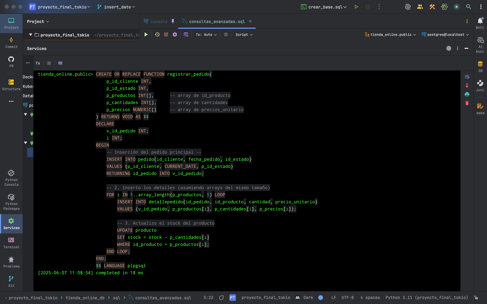
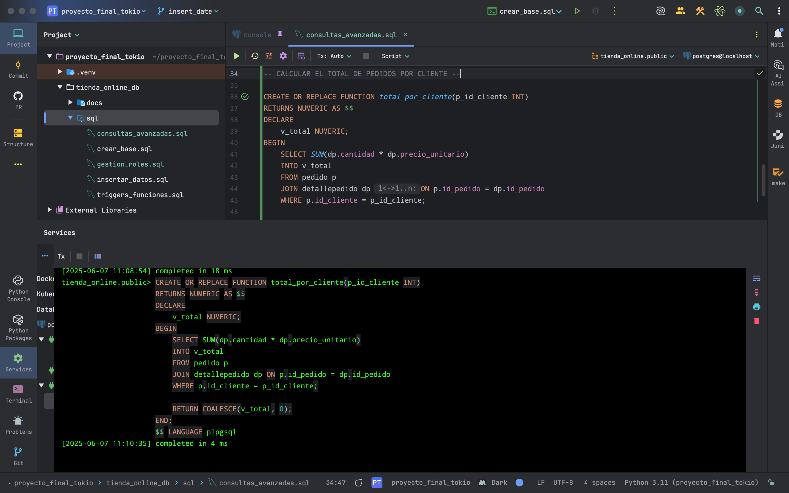
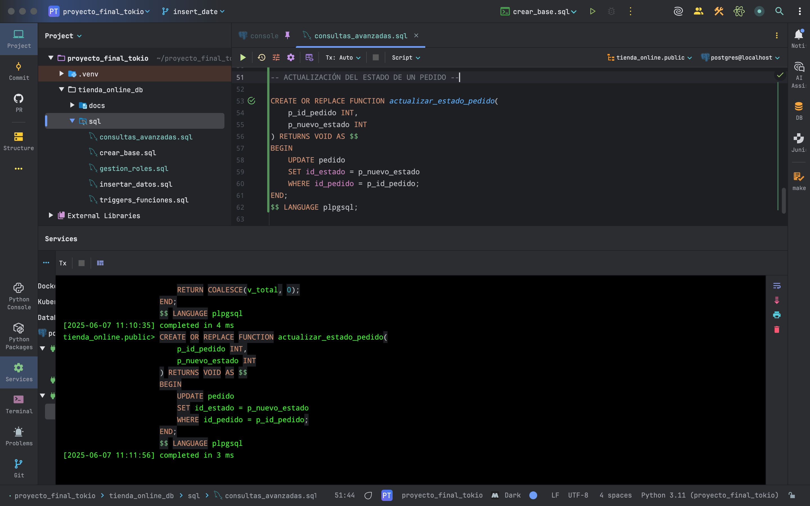
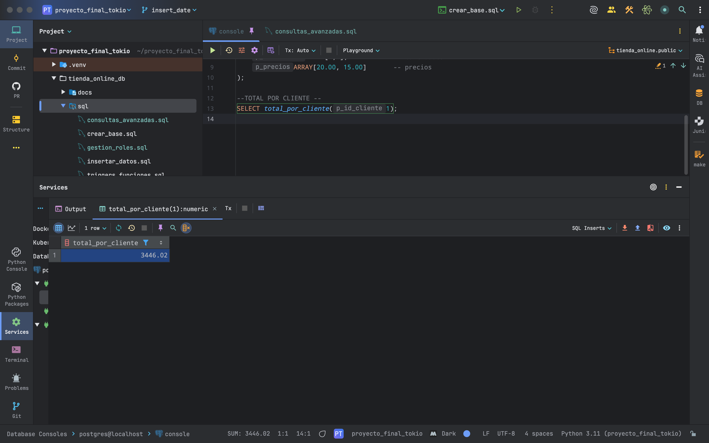
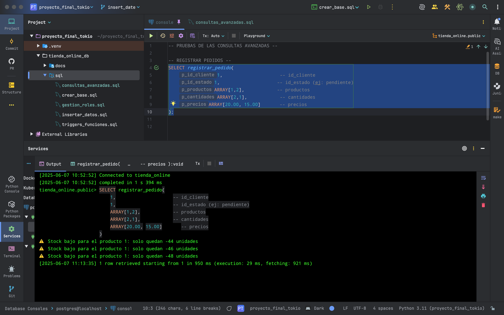
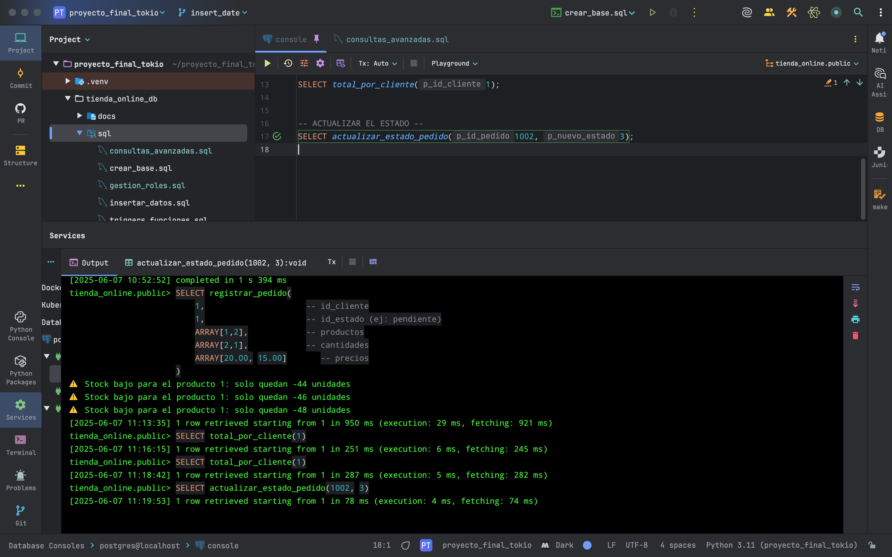

FUNCIONES EN PL/pgSQL¶
En esta sección se documentan las funciones programadas en el lenguaje procedural PL/pgSQL, utilizadas para encapsular lógica del negocio en la base de datos tienda_online.
Se implementaron tres funciones principales:
Registrar un nuevo pedido.
Calcular el total gastado por un cliente.
Actualizar el estado de un pedido.
1. Función: registrar_pedido¶
Registra un pedido completo, incluyendo su detalle, en una transacción controlada.
CREATE OR REPLACE FUNCTION registrar_pedido(
p_id_cliente INTEGER,
p_id_estado INTEGER,
p_id_producto INTEGER,
p_cantidad INTEGER
) RETURNS VOID AS $$
DECLARE
v_precio NUMERIC;
v_id_pedido INTEGER;
BEGIN
-- Obtener precio del producto
SELECT precio_unitario INTO v_precio
FROM producto
WHERE id_producto = p_id_producto;
-- Crear el pedido
INSERT INTO pedido (id_cliente, id_estado, fecha_pedido)
VALUES (p_id_cliente, p_id_estado, CURRENT_DATE)
RETURNING id_pedido INTO v_id_pedido;
-- Insertar línea de detalle
INSERT INTO detallepedido (id_pedido, id_producto, cantidad, precio_unitario)
VALUES (v_id_pedido, p_id_producto, p_cantidad, v_precio);
END;
$$ LANGUAGE plpgsql;
Ejecución de la función registrar_pedido (con bucle for)¶
La siguiente imagen muestra la ejecución de la función registrar_pedido, que inserta el pedido, sus detalles, y actualiza el stock de los productos usando un bucle FOR:
{kind=link}
2. Función: calcular_total_por_cliente¶
Calcula cuánto ha gastado un cliente en total.
CREATE OR REPLACE FUNCTION calcular_total_por_cliente(
p_id_cliente INTEGER
) RETURNS NUMERIC AS $$
DECLARE
v_total NUMERIC;
BEGIN
SELECT SUM(dp.cantidad * dp.precio_unitario)
INTO v_total
FROM pedido p
JOIN detallepedido dp ON p.id_pedido = dp.id_pedido
WHERE p.id_cliente = p_id_cliente;
RETURN COALESCE(v_total, 0);
END;
$$ LANGUAGE plpgsql;
Lógica y ejecución de total_por_cliente¶
{kind=link}
3. Función: actualizar_estado_pedido¶
Permite cambiar el estado de un pedido a un nuevo valor.
CREATE OR REPLACE FUNCTION actualizar_estado_pedido(
p_id_pedido INTEGER,
p_nuevo_estado INTEGER
) RETURNS VOID AS $$
BEGIN
UPDATE pedido
SET id_estado = p_nuevo_estado
WHERE id_pedido = p_id_pedido;
END;
$$ LANGUAGE plpgsql;
Lógica y ejecución de actualizar_estado_pedido¶
{kind=link}
Resultado total acumulado por cliente¶
{kind=link}
Validación completa de registrar_pedido¶
La siguiente imagen muestra la ejecución integrada de la función registrar_pedido, incluyendo alertas de stock bajo y validación de estados.
{kind=link}
Consulta combinada: stock bajo + actualización de estado¶
{kind=link}
Validación y pruebas¶
Se realizaron pruebas unitarias de cada función.
Se insertaron pedidos completos desde la función registrar_pedido.
Se validaron resultados con consultas posteriores.
Se controlaron posibles errores como productos inexistentes o cantidades inválidas (se recomienda agregar validaciones en versiones futuras).
Estas funciones encapsulan lógica clave del negocio, asegurando integridad, consistencia y reutilización dentro del sistema.